Production & PO Tracking
Keep each PO up to date on the PO Status Tracker, from mass production to ready to ship, and record what has shipped in the PO Book.
Draft. The steps for the PO Status Tracker come from the old guide's field list, because no tool writes to that sheet.
Saul to confirm 9 things
- Who fills each column, and the order of the checks.
- Who adds a new PO's rows to the PO Status Tracker and to Master Sheet Live.
- What to type in Carton Marks Confirmed, Batch # Checked, Distro Sent, the ticket columns, Inspection Report and Production Samples.
- What goes in CRD Expected, and whether a slipped date goes in Factory CRD, Delayed CRD or both.
- Whether Delayed CRD is typed or worked out by the sheet, and how it's marked as reviewed.
- Who marks a PO shipped in the PO Book, and at what point. Only the buttons come from the tool.
- The full lists of PI Status and Order Type values. Reserved Stock comes from the Dev PLM demo. The demo's PI list also has Qty Issue, Price & Qty Issue, Pending PPS and OK - Pending Other Styles For PI.
- The exact titles of the columns no tool reads, listed under Reference. These come from the Dev PLM demo.
- Which Report Runner reports are in use for POs. Report Runner is a separate tool on the Tools Hub, with a PO Status Tracker folder of reports.
Jump to: Update the PO Status Tracker · Find a PO · Mark a whole PO shipped · Ship part of a PO · Backorder · Undo a shipped mark · Clear an issue · Export to Excel · Rules · Reference
Update a PO on the PO Status Tracker
Screenshots use made-up sample data. Click any picture to see it larger.
-
Open the PO Book
Click Open PO Book above. Sign in with your Metro1 Microsoft account if it asks.
-
Click the PO Status Tracker chip
It's the small rounded label, called a chip, at the top of the page 1. The workbook opens in a new tab. The chip also shows when the file was last saved. The Master Sheet Live chip 2 does the same for that file. Master Sheet Live is the workbook with each PO's lines, quantities and prices.

-
Find the PO's row
Open the sheet named PO Status Tracker. Each row is one style on one PO. Look for the PO# and the Style #.
PO# Supplier Order date Item Description Style # Order Type Customer Customer 1st Ship Date CRD Expected Factory CRD 900101 Sample Factory A 8/30/2026 Sample Rose Body Mist SAMPLE-1001 Bulk Burlington 1/3/2027 11/18/2026 11/20/2026 900101 Sample Factory A 8/30/2026 Sample Citrus Shower Gel SAMPLE-1002 Bulk Burlington 1/3/2027 11/18/2026 11/20/2026 900102 Sample Factory B 9/5/2026 Sample Green Tea Toner SAMPLE-1003 Pre Sold Ross 1/7/2027 11/26/2026 12/1/2026 900103 Sample Factory C 9/9/2026 Sample Shea Body Butter SAMPLE-1004 China Pickup TJ Maxx 11/25/2026 11/15/2026 11/15/2026 900106 Sample Factory C 9/23/2026 Sample Aloe Lip Balm SAMPLE-1009 M1S Stock M1S Stock 12/16/2026 12/16/2026 Drawn layout with sample data, not a screenshot. Scroll the table sideways to see all 10 columns. These are the ones the PO Book reads. The sheet has more, listed under Reference.
No row yet? Each style on the PO needs its own row, with the columns drawn here filled in. The PO Book also needs the PO on Master Sheet Live, for its quantity and price.
-
Update the dates
Keep CRD Expected and Factory CRD current. CRD is the Cargo Ready Date. Factory CRD is the date the factory gives. Delayed CRD is for a Factory CRD later than expected. The PO Book reads Factory CRD, not Delayed CRD.
-
Confirm the pre-ship checks
Fill in PI Status, Carton Marks Confirmed, Batch # Checked and Distro Sent. PI Status values are under Allowed values in Reference. The Glossary explains each term.
-
Track the tickets
Fill in the ticket columns as they happen: Tickets Ordered, Ticket Placement Confirmed, Tickets Received and Ticket Info Sent To HK Office. Tickets are retail price tickets or labels. HK is the Hong Kong office.
-
Fill in the inspection columns
Fill in Inspection Report and Production Samples. The inspection itself is in the Inspection guide.
-
Check it's ready to book
Goods can be booked once carton marks, batch numbers, tickets, PI and inspection are confirmed. Booking is in Plan and book a container.
-
Check the PO Book picked it up
The PO Book looks for a newer file on a timer, every 5 minutes unless Settings says otherwise. To look now, click Refresh at the top right of the PO Book. The time on the chip changes when it has the new file.
Find a PO in the PO Book
-
Read the top of the page
Four boxes count what's open: Open POs, Open lines, Units and Value. A line is one style on one PO. Click a bar under Open by supplier or Open by PO type 1 to show only those lines. Click it again to show all.
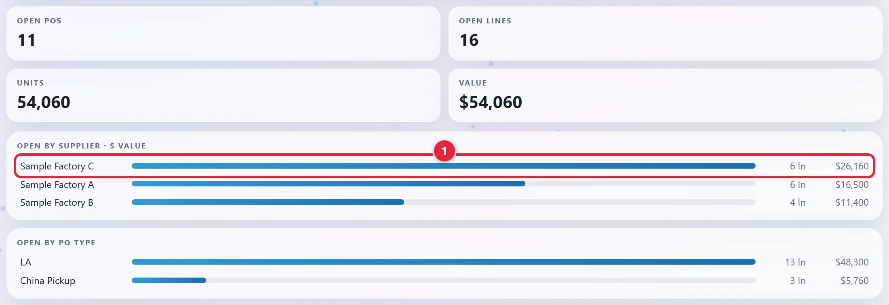
-
Pick POs or Styles
Use the switch at the top left of the table 1. POs shows one row per PO. Styles shows one row per style.
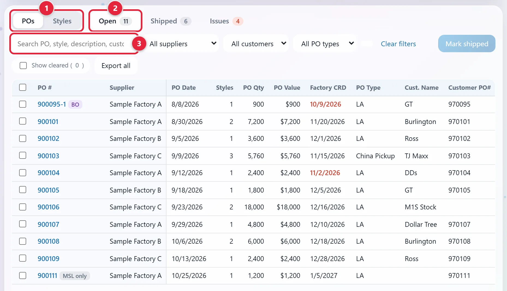
The table goes on to the right, with Cust. Start, Cust. Cancel and Buffer. -
Pick a tab
Click Open 2, Shipped or Issues. Each tab shows how many it holds.
-
Search or filter
Type in the search box 3. It finds a PO, style, description, customer PO, supplier or customer. You can also use All suppliers, All customers and All PO types. Clear filters resets them.
-
Click a PO number to see its styles
On POs, click the blue number under PO #. The switch moves to Styles and the table shows that PO's styles. Click POs to go back to the PO list. To stay on Styles and show every style, click the chip with the PO number, above the table.
Mark a whole PO shipped
-
Tick the PO
Stay on POs and Open. Tick the box at the left of the PO 1.
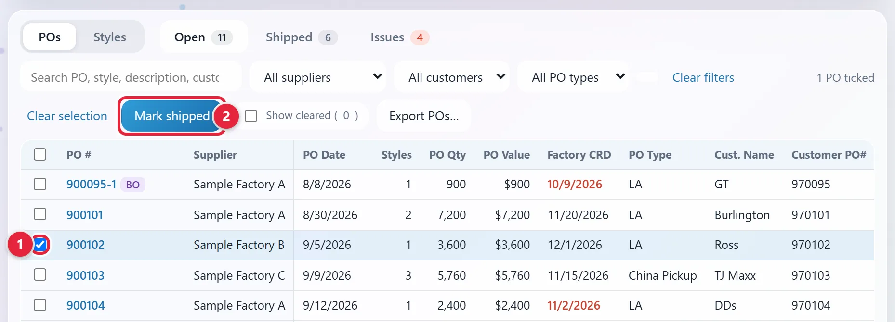
-
Click Mark shipped
It's above the table 2. It stays pale until you tick something.
-
Check the ship date
The Ship date 1 starts at today. Change it if the goods shipped on another day.
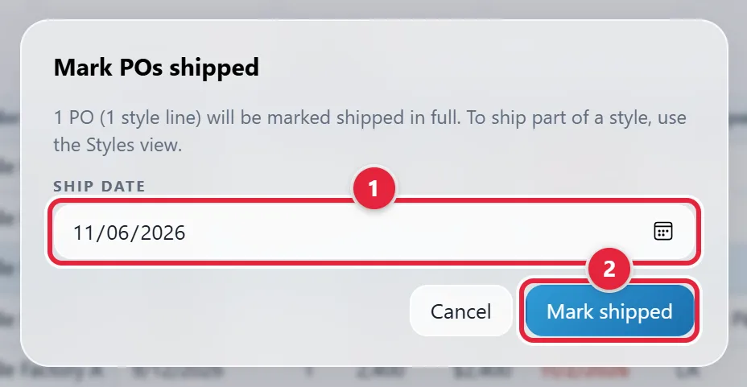
-
Click Mark shipped in the popup
Click Mark shipped 2. Every style on the PO is marked shipped in full. The PO moves to the Shipped tab, with the date and your name.
Ship part of a PO
-
Click Styles
Use the switch at the top left of the table 1. Each style now has its own row.
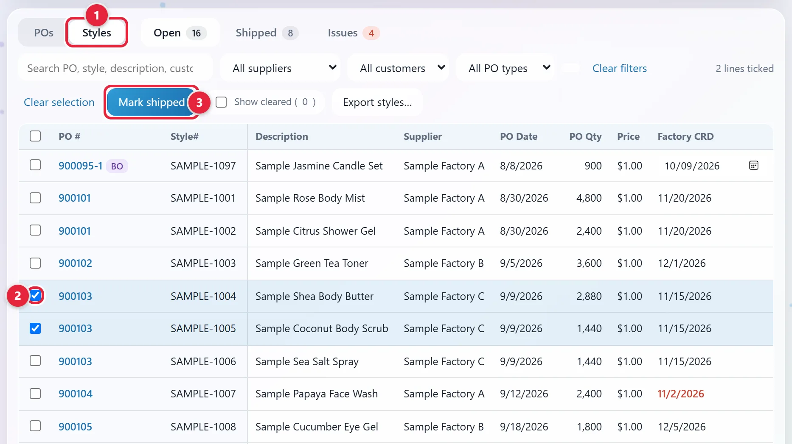
The table goes on to the right, with more columns and a link at the end of each row. -
Tick the lines that shipped
Tick the box at the left of each line 2. A click on a blue PO # ticks every line on that PO.
-
Click Mark shipped
It's above the table 3. The Confirm qty shipped popup opens.
-
Check the ship date
The Ship date at the top 1 starts at today. Change it if the goods shipped on another day.
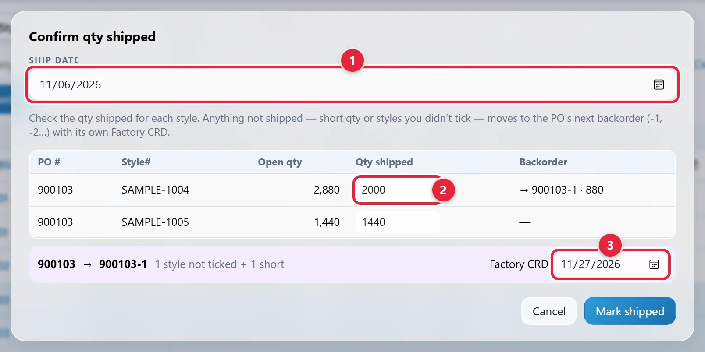
-
Type what really shipped
If a line shipped short, change its Qty shipped 2. The Backorder column then shows the new PO number and the units left. A backorder is the part of a PO that hasn't shipped.
-
Set the backorder's Factory CRD
Anything not shipped moves to the PO's next backorder (-1, -2 and so on). That means short quantities and any lines you didn't tick. Factory CRD 3 starts at the lines' latest Factory CRD if that date hasn't passed. Change it to the backorder's date.
If everything shipped in full, nothing is left over. The box still shows. Leave it empty.
-
Click Mark shipped in the popup
The shipped lines move to the Shipped tab. The rest stay on Open under the backorder number.
Move part of a line to a backorder
This moves part of a line to its own backorder line, with its own Factory CRD. Nothing is marked shipped. Use it when you know part of a line will be ready later than the rest. If goods are shipping now, use Ship part of a PO, which makes the backorder for you.
-
Click Backorder…
On Styles, it's at the right end of the row 1. If you can't see it, scroll the table to the right.
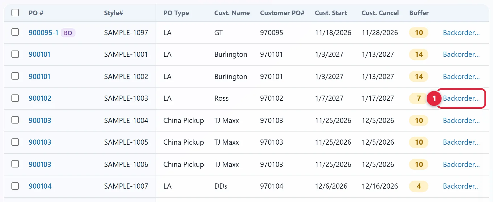
Scrolled to the right. Description, Supplier, PO Date, PO Qty, Price and Factory CRD are out of view. -
Fill in the popup
Backorder PO # is filled in for you. Type the Backorder qty 1 and pick the Backorder Factory CRD 2.
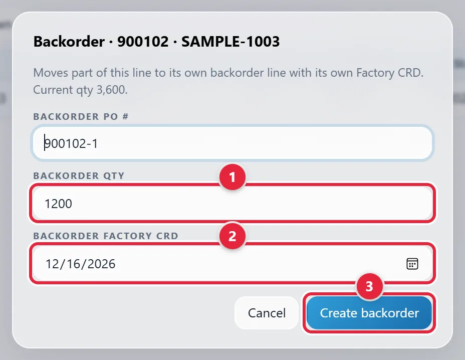
-
Click Create backorder
Click Create backorder 3.
-
Check the new line
It has a BO tag 1 and its own date box 2. Change the date there and it saves by itself. The first line shows the units that moved 3.
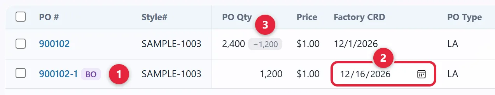
Undo backorder, at the right end of the new line, removes it. There's a picture under Undo a shipped mark.
Undo a shipped mark
-
Click the Shipped tab
Read the Shipped column at the right. Round 1 means Master Sheet Live already counts it as shipped. A date and a name 2 mean someone marked it in the PO Book.
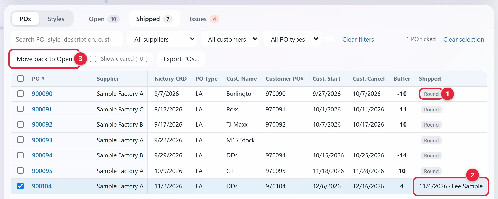
Scrolled to the right. PO Date, Styles, PO Qty and PO Value are out of view. -
Tick the PO
Tick the box at the left of the row you marked by mistake.
-
Click Move back to Open
It's above the table 3. It only works on lines marked by hand. A Round line stays shipped until Master Sheet Live changes.
-
Undo the backorder too, if the mark made one
Move back to Open leaves it in place. The line keeps its lower PO Qty and the backorder lines stay on Open. Until you undo them, the PO Book and the Shalam Tool keep the split.
Click Open and Styles. Find the lines the mark made. They have the PO's highest backorder number: -1, or -2 if the PO already had a -1. Click Undo backorder at the right end of each one 1. If you can't see it, scroll the table to the right. Leave any other backorder alone. It can have the same link.
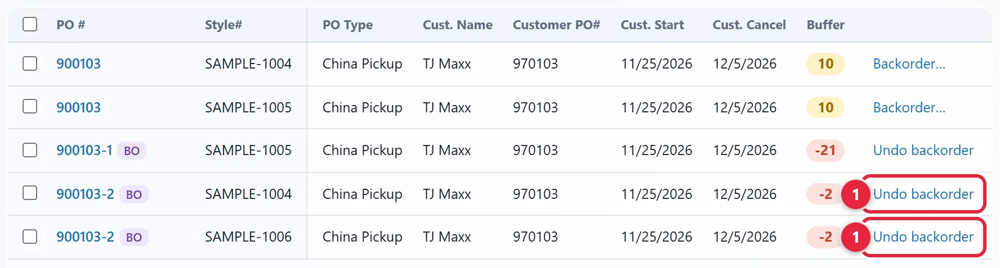
This PO already had a -1 before the mark, so the mark's lines are -2. Scrolled to the right. Description, Supplier, PO Date, PO Qty, Price and Factory CRD are out of view.
Clear an issue
-
Click the Issues tab
Click Issues 1. It lists lines the PO Book couldn't match between the two workbooks. Reference says what each message means.
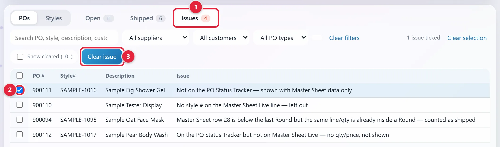
-
Fix the cause if you can
Correct the workbook. The issue goes away by itself once the PO Book reads the new file.
-
Tick the issue and click Clear issue
Tick its box 2, then click Clear issue 3. This only hides it. It changes nothing in the workbooks.
-
Bring back a cleared issue if you need it
Tick Show cleared, tick the issue, and click Restore.
Export to Excel
-
Set the filters, or tick the rows
The file follows your search and filters. On POs it has one row per PO. On Styles it has one row per style.
-
Click the export button
It's above the table, on the Open and Shipped tabs. Its name changes. It reads Export all, Export all shown when a search or filter is on, and Export POs… or Export styles… when rows are ticked.
With nothing ticked, an Excel file downloads with an Open tab and a Shipped tab.
-
Pick what goes in each tab, if you ticked rows
A popup opens. For each tab, pick the ticked rows, everything shown, or Leave empty. Click Export 1.
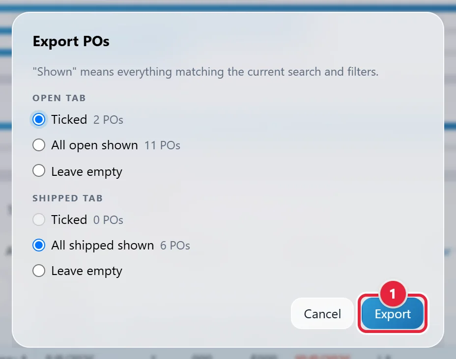
Rules to remember
- Keep the sheet names PO Status Tracker and Master Sheet Live, and the column titles drawn in this guide, exactly as they are. If one changes, the PO Book stops loading and names what's missing.
- A row needs a PO# that starts with 6 digits, and a Style #. Otherwise the PO Book leaves it out.
- Goods can't be booked until carton marks, batch numbers, tickets, PI and inspection are confirmed.
- What you mark in the PO Book stays in the PO Book. It changes neither workbook. The Shalam Tool reads the same marks.
- POs marks a whole PO shipped in full. To ship part of a PO, use Styles.
- Every backorder needs its own PO #, quantity and Factory CRD.
- The PO Book's Settings are shared with everyone who uses it.
Reference
PO Status Tracker fields
| Group | Fields |
|---|---|
| Order identity | PO#, Supplier, Order date, Item Description, Style #, Item Type, Order Type, Customer |
| Dates | Customer 1st Ship Date, CRD Expected, Factory CRD, Delayed CRD |
| Pre-ship | PI Status, Carton Marks Confirmed, Batch # Checked, Distro Sent |
| Tickets | Tickets Ordered, Ticket Placement Confirmed, Tickets Received, Ticket Info Sent To HK Office |
| QC (quality control) link | Inspection Report, Production Samples |
Allowed values
| Field | Allowed values |
|---|---|
| Order Type | Bulk · Pre Sold · Reserved Stock · M1S Stock · China Pickup |
| PI Status | Signed · Price Issue (and similar) |
| Item Type | New · Reorder |
Where each PO Book column comes from
| PO Book column | Comes from |
|---|---|
| PO #, Style# | Master Sheet Live: Po Number, Style Number. A backorder adds -1, -2 and so on. |
| Description | PO Status Tracker: Item Description. If blank, Master Sheet Live: Product name. |
| Supplier | PO Status Tracker: Supplier. If blank, Master Sheet Live: Factory. |
| PO Date | PO Status Tracker: Order date. If blank, Master Sheet Live: Order Date. |
| PO Qty, Price | Master Sheet Live: Quantity, Price |
| PO Value | PO Qty × Price |
| Styles | How many styles the PO has. Open styles / all styles when the two differ. |
| Factory CRD | PO Status Tracker: Factory CRD, else CRD Expected, else Master Sheet Live: Ship by. A backorder typed on Master Sheet Live uses Ship by. A date you set in the PO Book wins. On POs, the latest of the PO's styles. |
| PO Type | China Pickup when Order Type is China Pickup. Otherwise LA. On POs, Mixed when a PO's styles have both. |
| Cust. Name | PO Status Tracker: Customer |
| Customer PO# | Master Sheet Live: Notes, after "PO". Blank for M1S Stock. |
| Cust. Start | Master Sheet Live: Notes, after "SW" or "SHIP". If none, PO Status Tracker: Customer 1st Ship Date. |
| Cust. Cancel | Master Sheet Live: Notes, the second date after "SW", as in SW 12/2-12/10 |
Buffer and colors
Buffer is the number of days between Factory CRD and Cust. Start. On an LA PO, it also takes off the LA transit offset from Settings, which starts at 30 days.
| You see | What it means |
|---|---|
| Red buffer | Below 0 |
| Amber buffer | 0 up to the Tight buffer setting, which starts at 14 days |
| Green buffer | More than that |
| Red Factory CRD | The date has passed and the line is still open |
Tags on a row
| Tag | What it means |
|---|---|
| BO | A backorder line. When part of a PO has shipped, its open styles show as the next backorder. |
| MSL only | On Master Sheet Live but not on the PO Status Tracker |
| latest | On POs: the PO's styles have different CRDs, and this is the latest |
| −1,200 beside PO Qty | That many units moved to a backorder |
| Round | Counted as shipped because of where it sits on Master Sheet Live |
Issue messages
| The message starts | What it means |
|---|---|
| Not on the PO Status Tracker | The line shows, with Master Sheet Live data only |
| On the PO Status Tracker but not on Master Sheet Live | No quantity or price, so the line doesn't show |
| No style # on the Master Sheet Live line | The line is left out |
| Master Sheet row … is below the last Round | The same line and quantity is already inside a Round, so it counts as shipped |
Master Sheet Live: open or shipped
A row whose Product name starts with "Round" splits the sheet. Lines above the last Round row count as shipped. Lines below it are open. A Po Number covers the lines under it until the next one.
| Product name | Style Number | Price | Quantity | Po Number | Factory | Order Date | Ship by | Notes |
|---|---|---|---|---|---|---|---|---|
| Sample Oat Face Mask | SAMPLE-1095 | 1.00 | 3,600 | 900094 | Sample Factory B | 7/31/2026 | 9/29/2026 | PO# 970094 |
| Sample Peony Candle Set | SAMPLE-1096 | 1.00 | 1,200 | 900095 | Sample Factory A | 8/8/2026 | 10/9/2026 | PO# 970095 |
| Round 42 | ||||||||
| Sample Rose Body Mist | SAMPLE-1001 | 1.00 | 4,800 | 900101 | Sample Factory A | 8/30/2026 | 11/20/2026 | PO# 970101, SW 1/3-1/13 |
| Sample Citrus Shower Gel | SAMPLE-1002 | 1.00 | 2,400 |